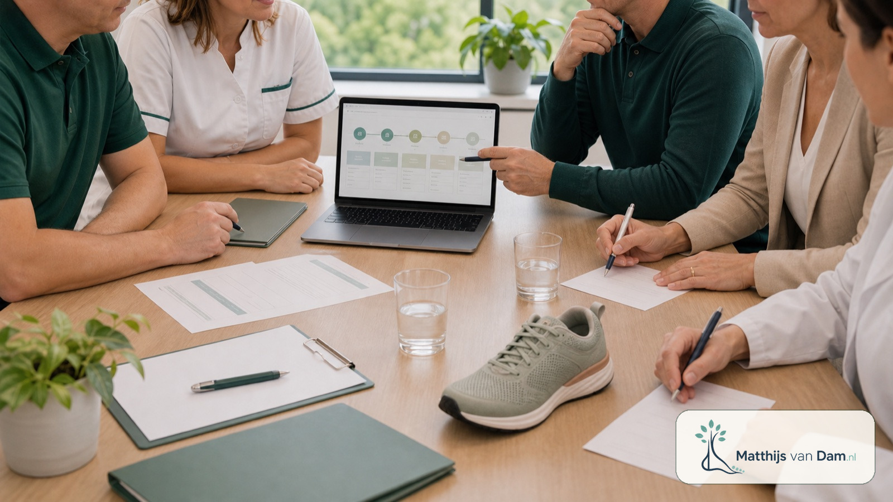

Project
Transmuraal Tilburg Cohort
Een digitaal transmuraal zorgpad dat start op de orthopedische polikliniek voor patiënten met artrose waarbij leefstijl, gewicht en belastbaarheid een rol kunnen spelen.
Wat wordt er opgebouwd?
Het Transmuraal Tilburg Cohort wordt opgebouwd rond een digitaal zorgpad voor patiënten met artrose. Een zorgpad beschrijft welke stappen in de zorg logisch op elkaar volgen: informatie, vragenlijsten, beoordeling op de polikliniek, verwijzing waar nodig en begeleiding binnen of buiten het ziekenhuis. Patiënten krijgen vanuit de polikliniek orthopedie toegang tot onderdelen van dit zorgpad via MijnETZ.
Het heet een cohort omdat het zorgpad ook de basis vormt voor wetenschappelijk cohortonderzoek. Patiënten die daarvoor toestemming geven, kunnen volgens een vaste onderzoeksroute worden gevolgd en geëvalueerd. Zo ontstaat inzicht in hoe de zorg in de praktijk wordt gebruikt, welke uitkomsten zichtbaar worden en waar verbetering mogelijk is.
Het cohort is daarmee meer dan een digitale vragenlijst. Het is een manier om zorg, begeleiding, onderzoek en regionale samenwerking stap voor stap aan elkaar te verbinden. Daarbij gaat het om het gericht inzetten van passende ondersteuning, zoals fysiotherapie, leefstijlbegeleiding of een gecombineerde leefstijlinterventie wanneer dat binnen de zorgroute past.
Deelname, gegevensverwerking en eventuele patiëntcommunicatie verlopen via de afgesproken ETZ-, MijnETZ- en onderzoeksroutes. Deze website is alleen bedoeld als algemene toelichting; deel hier geen patiëntgegevens, beelden, verwijsbrieven of medische vragen.
Mijn rol
Orthopedische inhoud en regionale route
Ik ben initiator van het Transmuraal Tilburg Cohort vanuit de orthopedische praktijk. De kernvragen zijn: welke informatie hebben patiënten nodig, welke stappen zijn logisch rond de polikliniek, en hoe kan ondersteuning buiten het ziekenhuis beter aansluiten op knieartrosezorg in de regio Tilburg?
Status
In ontwikkeling en evaluatie
Het zorgpad wordt stapsgewijs opgebouwd. Daarbij gaat het zowel om de inhoud als om de vraag hoe patiënten en professionals het zorgpad in de praktijk gebruiken.
Waarom dit nodig is
Artrose en obesitas komen vaak samen voor. Die combinatie kan leiden tot meer pijn, minder mobiliteit, een hogere zorgvraag en meer risico's rond een eventuele operatie. In de dagelijkse zorg is ondersteuning vaak verdeeld over ziekenhuis, huisartsenzorg, fysiotherapie, diëtetiek, leefstijlcoaching en het sociaal domein. Voor patiënten kan daardoor onduidelijk zijn welke hulp beschikbaar is en welke stap op welk moment logisch is. Met het Transmuraal Tilburg Cohort wil ik bijdragen aan meer duidelijkheid, structuur en passende ondersteuning.
Binnen deze aanpak wordt onderzocht hoe die route duidelijker kan worden ingericht, zonder patiënten te reduceren tot gewicht of leefstijl. Het uitgangspunt is passende ondersteuning bij gewrichtsklachten, gezondheid en belastbaarheid.
Hoe het zorgpad werkt
Binnen het digitale zorgpad krijgen patiënten informatie over artrose, herstel, bewegen en leefstijl. Waar passend kan ook worden verwezen naar begeleiding buiten het ziekenhuis, zoals een fysiotherapeut, diëtist, leefstijlcoach, GLI-aanbieder of sport- en beweegcoach in de regio Tilburg.
Onderzoeksvragen
Binnen het cohort wordt onder andere gekeken naar deelname, gebruik van het digitale zorgpad, tevredenheid, gewicht, pijn, functioneren, kwaliteit van leven, fysieke activiteit en zorgconsumptie. Ook wordt onderzocht welke onderdelen voor patiënten en professionals het meest bijdragen aan succes.
Relevantie voor Tilburg
Juist in een regionale context is het belangrijk dat ziekenhuiszorg, eerstelijnszorg en leefstijlondersteuning elkaar goed weten te vinden. Het cohort kan helpen om zichtbaar te maken waar overdracht, informatie en ondersteuning rond artrose en obesitas in de regio Tilburg beter op elkaar kunnen aansluiten.
Mede mogelijk gemaakt door
Het Transmuraal Tilburg Cohort wordt mede mogelijk gemaakt door steun van het Heracleum Hulpfonds, een implementatievoucher van de Coalitie Leefstijl in de Zorg en een bijdrage van het Vaillant Fonds. Deze steun helpt om het digitale zorgpad inhoudelijk, technisch en wetenschappelijk verder op te bouwen.
De Heracleum-bijdrage ondersteunt vooral de onderzoeksopzet en dataverzameling. De implementatievoucher van de Leefstijlcoalitie helpt om leefstijlbegeleiding een herkenbare plek te geven in het digitale zorgpad. De bijdrage van het Vaillant Fonds wordt gebruikt voor verdere ontwikkeling van het digitale zorgpad.
Verdere steun
Voor de volgende stappen blijft aanvullende steun nodig. Daarbij gaat het om doorontwikkeling van het digitale zorgpad, zorgvuldige evaluatie en verdere regionale implementatie.
Verwachte impact
Voor patiënten kan het zorgpad bijdragen aan duidelijkere informatie en beter afgestemde begeleiding. Voor ziekenhuis en regio kan deze aanpak helpen om consulten, verwijzingen en ondersteuning minder versnipperd te organiseren.
Bronnen: informatie over het Transmuraal Tilburg Cohort, 2025; Coalitie Leefstijl in de Zorg, implementatievoucher ETZ, 08/2025.